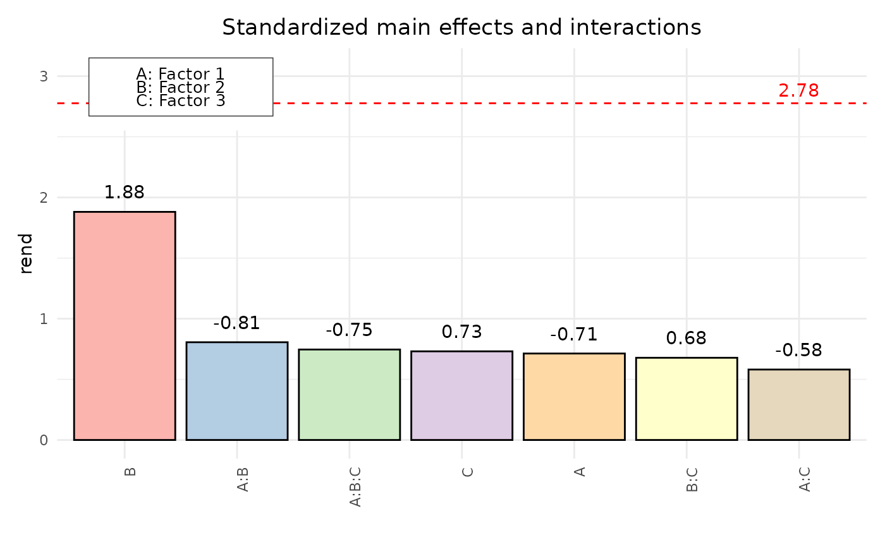
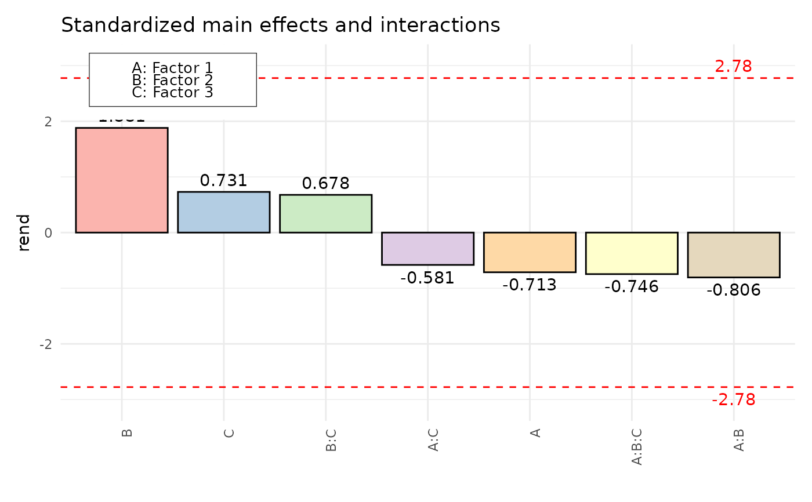

Display standardized effects and interactions of a facDesign.c object in a pareto plot.
Usage
paretoPlot(
dfac,
abs = TRUE,
decreasing = TRUE,
alpha = 0.05,
response = NULL,
ylim,
xlab,
ylab,
main,
p.col,
legend_left = TRUE
)Arguments
- dfac
An object of class facDesign.
- abs
Logical. If
TRUE, absolute effects and interactions are displayed. Default isTRUE.- decreasing
Logical. If
TRUE, effects and interactions are sorted decreasing. Default isTRUE.- alpha
The significance level used to calculate the critical value
- response
Response variable. If the response data frame of fdo consists of more then one responses, this variable can be used to choose just one column of the response data frame.
responseneeds to be an object of class character with length of `1`. It needs to be the same character as the name of the response in the response data frame that should be plotted. By defaultresponseis set toNULL.- ylim
Numeric vector of length 2: limits for the y-axis. If missing, the limits are set automatically.
- xlab
Character string: label for the x-axis.
- ylab
Character string: label for the y-axis.
- main
Character string: title of the plot.
- p.col
Character string specifying the color palette to use for the plot. Must be one of the following values from the
RColorBrewerpackage:`Set1``Set2``Set3``Pastel1``Pastel2``Paired``Dark2``Accent`
- legend_left
Logical value indicating whether to place the legend on the left side of the plot. Default is
TRUE.
Value
The function paretoPlot returns an invisible list containing:
- effects
a list of effects for each response in the
facDesign.cobject- plot
The generated PP plot.
Details
paretoPlot displays a pareto plot of effects and interactions for an object of class facDesign (i.e. 2^k full or 2^k-p fractional factorial design). For a given significance level alpha, a critical value is calculated and added to the plot. Standardization is achieved by dividing estimates with their standard error. For unreplicated fractional factorial designs a Lenth Plot is generated.
Examples
# Create the facDesign object
dfac <- facDesign(k = 3, centerCube = 4)
dfac$names(c('Factor 1', 'Factor 2', 'Factor 3'))
# Assign performance to the factorial design
rend <- c(simProc(120,140,1), simProc(80,140,1), simProc(120,140,2),
simProc(120,120,1), simProc(90,130,1.5), simProc(90,130,1.5),
simProc(80,120,2), simProc(90,130,1.5), simProc(90,130,1.5),
simProc(120,120,2), simProc(80,140,2), simProc(80,120,1))
dfac$.response(rend)
paretoPlot(dfac)

paretoPlot(dfac, decreasing = TRUE, abs = FALSE, p.col = "Pastel1")
